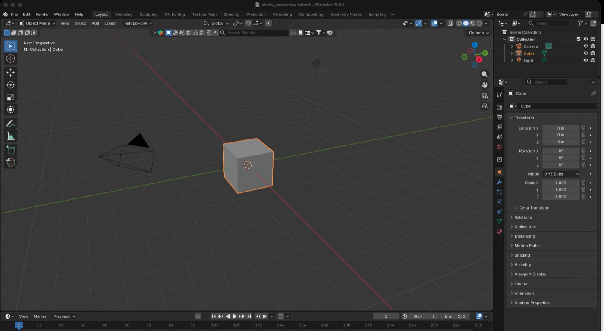
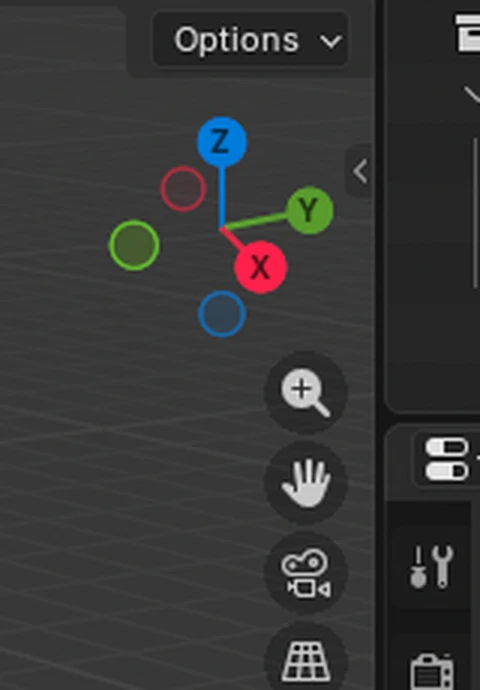
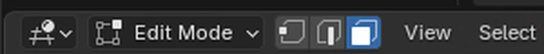
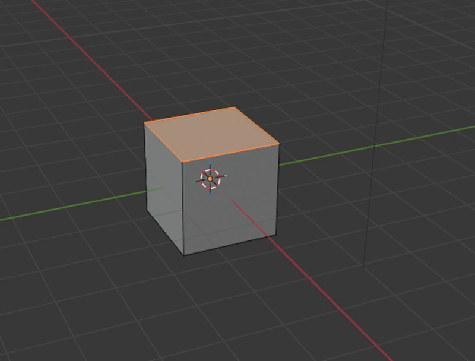
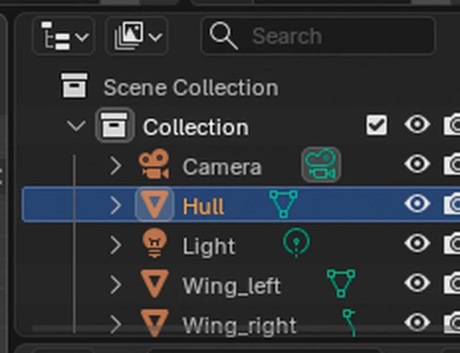
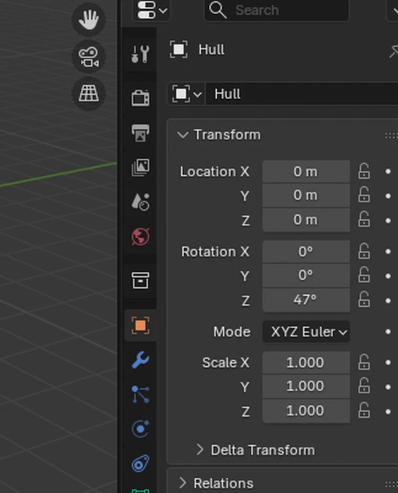
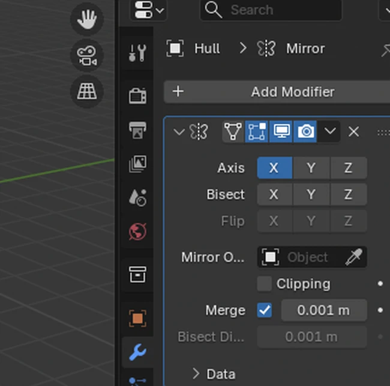

// Block 0 of 10 · sessions 1
The Blender interface
The viewport, axis navigation, selection, the object hierarchy and property panels — before your first blockout.
- Duration
- 1 session · ~2 h each
- Checkpoint
- You confidently orbit the view, select objects and mesh elements, and find the right properties panel without being told.
- Challenge
- Find all six orthographic views on your own keyboard (with or without a numpad) and teach the trick to the person next to you.
#The idea of the block
Before building anything of your own, it helps to answer a boring but important question: where even am I on this screen? Blender opens with a huge number of buttons, panels and tiny icons, and trying to memorize all of them upfront is a guaranteed way to get discouraged before your first cube. The good news: you really only need four screen zones and a handful of habits, and the rest sticks as it comes up naturally.
This block isn't about "what every button does." It's about not getting lost: how to spin the model around to see it from the side you need; how to select exactly the right face instead of the wrong one; where to look for an object's name once there are ten of them on the scene; where to check or change exact numbers instead of dragging the mouse and guessing. None of this belongs to any one tool from the blocks ahead — it works underneath all of them at once.

#Session 1 — the viewport, selection, hierarchy and panels
Open Blender. By default the scene already has a cube, a camera and a light — don't delete them yet, they're useful landmarks for your first mouse movements.
#Navigating the viewport
The viewport isn't a "photo" of the scene from one fixed side — it's a window into 3D space that you can rotate, slide and zoom however you like. The main difference from familiar 2D programs: there's no single "correct" viewing angle here, and the first habit worth building is to keep moving the camera rather than trying to do everything from one random angle.
| Action | Mouse | What happens |
|---|---|---|
| Orbit | Hold the middle mouse button (MMB) and drag | The camera rotates around the point it's currently looking at |
| Pan | Shift + MMB, and drag | The camera slides sideways or up/down, the angle stays the same |
| Zoom | Scroll wheel, or Ctrl + MMB | The camera moves closer to or farther from the scene |
| Frame everything | Home | The viewport rescales itself so every object fits in view |
| Frame the selection | . (numpad period) or "View → Frame Selected" | The camera centers on just the selected object, ignoring the rest of the scene |
If an object "gets lost" — slides out of the visible area or turns out to be microscopic — don't hunt for it by scrolling around manually. Home just resets the view to something sane.
#Axes and the orientation gizmo
In the top-right corner of the viewport there's a small ball with six labeled circles — X, Y, Z and their opposite directions. This is the orientation gizmo, and it does two jobs at once.
First, it always shows which way the camera is currently facing relative to the three axes: red is X, green is Y, blue is Z (this color coding repeats everywhere in Blender, so it's worth memorizing right away). Second, clicking any of those circles instantly snaps the camera to a strict orthographic view along that axis (a view exactly from the front, exactly from the side, exactly from the top). That's faster and more precise than trying to eyeball it.

The numpad gives the same results, if you have one: 1 for front view, 3 for side view, 7 for top view, Ctrl plus the same digit for the opposite side, 5 to toggle between perspective and orthographic projection. On a laptop without a numpad, the same set is reachable through the "View → Viewpoint" menu, or the ~ (tilde) pie menu for quick view selection.
#Selection: objects vs. mesh elements
Selection in Blender works on two different levels, and mixing them up is the single most common reason a "tool isn't working."
Object Mode is the whole-object level. Left-clicking an object selects it entirely (it gets outlined in orange). Shift + click adds another object to the selection. Clicking empty space, or Alt + A, clears the selection.
Edit Mode is the geometry level inside a single object: vertices, edges, faces. You enter it with Tab while hovering over the object in Object Mode; the same key takes you back out. Inside Edit Mode there are three selection modes — switched with 1, 2, 3 (the plain number row, not the numpad) or the three icons in the viewport's top-left corner: vertex, edge and face select, respectively.
| Shortcut | Action |
|---|---|
| A | Select everything |
| Alt+A | Deselect everything |
| B | Box select — hold and drag a rectangle |
| Shift + click | Add an element to the current selection |
| Tab | Toggle Object Mode ↔ Edit Mode |
| 1 / 2 / 3 (in Edit Mode) | Vertex / Edge / Face |
A practical rule that saves you nine times out of ten: if a tool "does nothing," check in order — (1) am I actually in Edit Mode, not Object Mode? (2) is something actually selected, not an empty set? (3) am I in the selection mode (vertex/edge/face) this particular tool expects?


#The object hierarchy (Outliner)
The panel in the top-right corner is a tree list of everything on the scene: collections, objects inside them, and each object's own data (mesh, modifiers, materials). Clicking an object's name in the Outliner selects it in the viewport, exactly like clicking the object itself — handy when the object you need is hidden behind others or too small to grab.
The eye icon next to each object hides or shows it in the viewport without deleting anything — useful for temporarily getting clutter out of the way without any risk of losing it. Double-clicking a name lets you rename the object right there.

When several objects on a scene form one logical thing (a car's body and wheels, a character's torso and limbs), the Outliner also shows parent-child relationships (parenting) — more on that in Block 6, where hierarchy becomes the foundation for rigging.
#Properties panels
The vertical column of small icons in the bottom-right corner is the Properties editor's tabs. Each one opens a different set of settings for whatever's currently selected. Early on, only a few of them really matter:
| Icon | Tab | What's there |
|---|---|---|
| Orange square | Object Properties | Exact numeric Location, Rotation, Scale values — for when you need something set to precisely 0, or rotated to exactly 90°, instead of dragging the mouse by eye |
| Green dotted triangle | Object Data Properties | The mesh's own data: for example, this is where normals display gets toggled |
| Wrench | Modifier Properties | The object's modifier stack — this is exactly where Mirror gets added in Block 1 |
| Checkered ball | Material Properties | Materials and face colors — it already shows up in Block 1 when you color a finished object |
The Object Properties tab (orange square) is worth remembering on its own: that's where the numeric Location X/Y/Z, Rotation X/Y/Z and Scale X/Y/Z fields live. The mouse (via G, R, S — Move, Rotate, Scale) is great for moving an object "by eye," but this panel is where you set an exact value, or notice that an object got rotated to 47° instead of a clean 45°.

#Modifiers — the general idea
The wrench icon in the Properties column opens the Modifier Properties tab. A modifier is an operation that doesn't change the mesh itself immediately or permanently — it's layered on top like a transparent sheet: the object looks in the viewport as if the operation has already been applied, but underneath, the original geometry stays untouched, and any modifier can be turned off, changed or removed with no consequences for the base shape.
That's exactly what Mirror turns out to be in Block 1: you add it through Add Modifier → Generate → Mirror, and half the object starts mirroring in real time while you edit only the other half. The two eye icons next to each modifier in the list control whether its effect shows in the viewport and whether it shows in the final render, independently — handy for temporarily switching off a heavy modifier without losing its settings. The Apply button "bakes" a modifier into the mesh permanently — that's an action without an easy way back, so it's not worth rushing into on early blockouts.

Want to check whether all of this actually stuck? The "Where Am I?" trainer runs short scenarios — "screen state → what will this action do" — exactly the kind this block was about. A few rounds before block 1, and Object Mode/Edit Mode stops being a source of confusion right when things get interesting.
#Common problems
| Problem | Why it happens | Fix |
|---|---|---|
| The viewport doesn't orbit with the mouse — it selects or moves the object instead | The wrong mouse button is held (left instead of middle) | Orbiting is specifically the middle mouse button (MMB), held and dragged |
| The object "disappeared" from view | A stray pan or zoom pushed the view too far away | Home reframes the whole scene |
| G/R/S or a tool from the table below doesn't affect the mesh | You're in Object Mode while the operation expects Edit Mode (or the reverse) | Check the mode header above the viewport; Tab switches between them |
| The selection picked something other than what you meant | The wrong selection mode (vertex/edge/face) is active in Edit Mode | Switch modes with 1/2/3 and try again |
| Can't find the object you need among many on the scene | It's hidden behind others or out of frame | Click its name in the Outliner — selection and highlighting work even if it's not visible in the viewport |
#Before the session
- Blender 5.2 LTS is installed (free, runs on any ordinary PC).
- On a laptop without a numpad: check ahead of time that the ~ pie-menu shortcut works — not every keyboard emulates the numpad the same way.
- No other prep needed: this session exists precisely so you can open Blender for the first time without worrying about breaking anything.